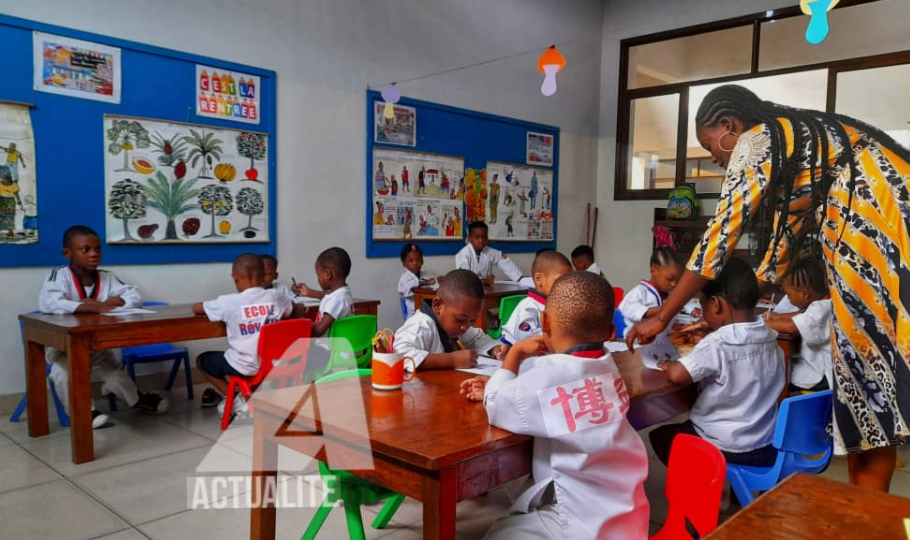
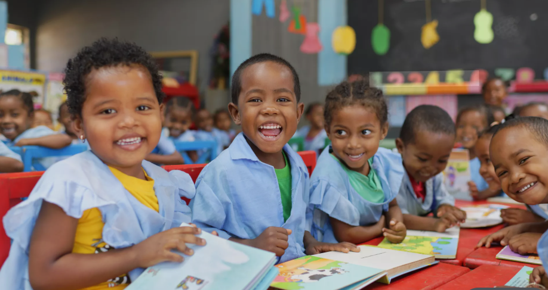

L’école joue un rôle fondamental dans la vie d’un individu et dans le développement d’une société. D’abord, elle permet d’acquérir des connaissances de base essentielles : lire, écrire, compter, mais aussi comprendre le monde qui nous entoure. Ces apprentissages sont indispensables pour devenir autonome et faire des choix éclairés dans la vie quotidienne. Ensuite, l’école est un lieu de socialisation. On y apprend à vivre avec les autres, à respecter des règles, à travailler en groupe et à développer des valeurs comme la tolérance, le respect et la solidarité. Ces compétences sociales sont tout aussi importantes que les savoirs académiques. L’école contribue également à révéler les talents et les passions de chacun. Elle offre un cadre où les élèves peuvent découvrir leurs intérêts, développer leurs capacités et construire progressivement leur projet de vie, que ce soit dans des domaines scientifiques, artistiques ou techniques. Enfin, l’éducation est un levier puissant de développement pour un pays. Une population instruite favorise l’innovation, la croissance économique et la stabilité sociale. Investir dans l’école, c’est investir dans l’avenir. En résumé, l’école ne sert pas seulement à apprendre des leçons : elle forme des citoyens responsables, capables de participer activement à la société.

Notre mission est d’offrir une éducation de qualité, inclusive et accessible, qui permet à chaque élève de développer pleinement son potentiel intellectuel, humain et social. Nous nous engageons à créer un environnement d’apprentissage stimulant, sécurisé et bienveillant, où la curiosité, la créativité et l’esprit critique sont encouragés et valorisés au quotidien. À travers des méthodes pédagogiques modernes et adaptées aux réalités du monde actuel, nous visons à formez des apprenants compétents, dotés de solides connaissances académiques, mais aussi de compétences pratiques indispensables à leur réussite personnelle et professionnelle. Nous accordons une importance particulière à l’acquisition de valeurs essentielles telles que le respect, l’intégrité, la discipline, la solidarité et le sens des responsabilités. Notre mission consiste également à préparer les élèves à devenir des citoyens engagés, conscients des enjeux locaux et globaux, capables de réfléchir de manière autonome, de prendre des décisions éclairées et de contribuer activement au développement de leur communauté et de la société dans son ensemble. En favorisant l’innovation, l’ouverture culturelle et l’apprentissage tout au long de la vie, nous souhaitons former une génération capable de s’adapter aux défis d’un monde en constante évolution, tout en restant profondément attachée aux valeurs humaines et éthiques. Ainsi, notre engagement dépasse le simple cadre académique : il s’agit de former des individus équilibrés, responsables et prêts à bâtir un avenir meilleur.

Nos valeurs constituent le socle fondamental de notre engagement éducatif et orientent chacune de nos actions, tant dans l’enseignement que dans les relations humaines au sein de notre institut éducative. Nous promouvons avant tout le respect, qui se manifeste par la considération de soi-même, des autres, des enseignants et de l’environnement. Le respect favorise un climat scolaire harmonieux, propice à l’apprentissage et à l’épanouissement de chaque élève, quelles que soient ses origines, ses croyances ou ses capacités. La discipline est également au cœur de notre démarche. Elle permet de structurer le travail, de développer le sens de l’effort et de la persévérance, et d’instaurer des habitudes positives qui accompagneront les apprenants tout au long de leur vie. Nous croyons qu’un cadre bien organisé et rigoureux est essentiel à la réussite académique et personnelle. L’excellence est une valeur que nous encourageons continuellement, non pas dans un esprit de compétition excessive, mais dans la recherche du meilleur de soi-même. Nous incitons chaque élève à se dépasser, à développer ses talents et à viser des objectifs élevés avec détermination et confiance. La solidarité occupe également une place centrale dans notre vision. Nous encourageons l’entraide, le partage des connaissances et le travail collaboratif afin de construire une communauté éducative unie, où chacun se sent soutenu et valorisé. Cette valeur prépare les élèves à vivre et à évoluer dans une société fondée sur la coopération et le vivre-ensemble. Enfin, l’intégrité guide nos comportements et nos décisions. Nous inculquons l’honnêteté, la transparence et le sens de la justice, afin de former des individus dignes de confiance, capables d’agir avec éthique dans toutes les situations. En intégrant ces valeurs dans tous les aspects de notre enseignement, nous aspirons à former non seulement des élèves performants, mais aussi des citoyens responsables, engagés et porteurs de changements positifs dans la société.

Notre objectif est de favoriser le développement global de chaque élève, en mettant un accent particulier sur l’épanouissement de ses compétences intellectuelles, sociales et personnelles. Nous visons à former des apprenants capables de penser de manière critique, d’analyser des situations complexes et de résoudre des problèmes avec autonomie et efficacité. Nous nous engageons à développer des compétences intellectuelles solides à travers un enseignement structuré, dynamique et adapté aux besoins de chaque élève. Cela inclut la maîtrise des savoirs fondamentaux, mais aussi la capacité à apprendre à apprendre, à s’adapter et à évoluer dans un monde en constante mutation. Parallèlement, nous accordons une importance essentielle au développement des compétences sociales. Nous encourageons la communication, la collaboration, l’écoute active et le respect des autres, afin de permettre aux élèves de s’intégrer harmonieusement dans la société et de travailler efficacement en équipe. Ces compétences relationnelles sont indispensables pour réussir aussi bien dans la vie personnelle que professionnelle. La créativité est également au cœur de notre objectif éducatif. Nous stimulons l’imagination, l’innovation et l’expression personnelle à travers diverses activités pédagogiques et culturelles. Nous croyons que chaque élève possède un potentiel unique qui mérite d’être exploré et valorisé, et nous créons les conditions nécessaires pour qu’il puisse s’exprimer librement et développer ses talents. Enfin, nous préparons activement les élèves à relever les défis du futur, en les dotant d’outils, de connaissances et de valeurs qui leur permettront de s’adapter aux évolutions technologiques, économiques et sociales. Nous les accompagnons dans la construction de leur projet de vie, en cultivant leur confiance en eux, leur sens des responsabilités et leur capacité à prendre des initiatives. Ainsi, notre objectif dépasse la simple réussite scolaire : il s’agit de former des individus équilibrés, créatifs, compétents et prêts à contribuer de manière positive et durable à la société.